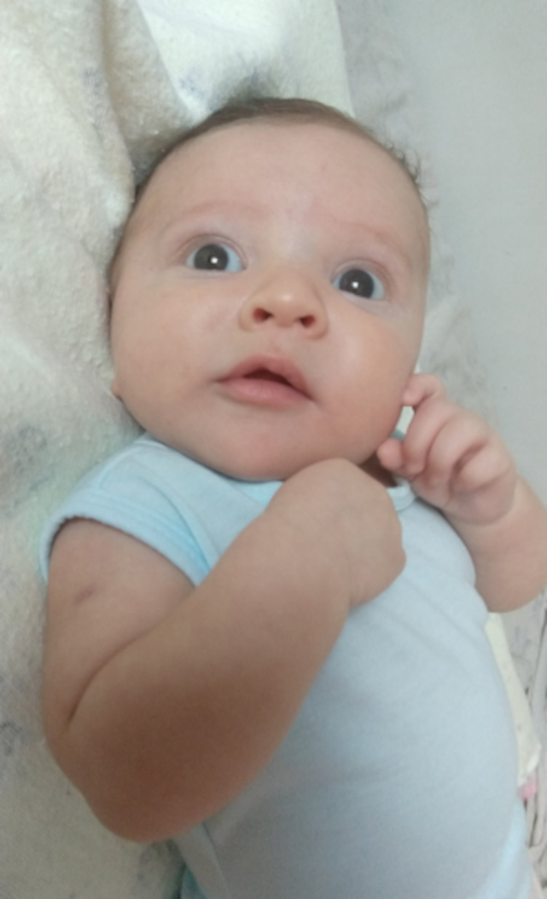

Imagem dinâmica
Tente abrir esse site em vários dispositivos diferentes ou simplesmente aumente e diminua o tamanho do seu navegador
Treinando
O baby mais lindo do mundo

Audios
Vamos parender agora a reproduzir audios no nosso site.
Videos
Videos hospedados localmente
Videos do youtube